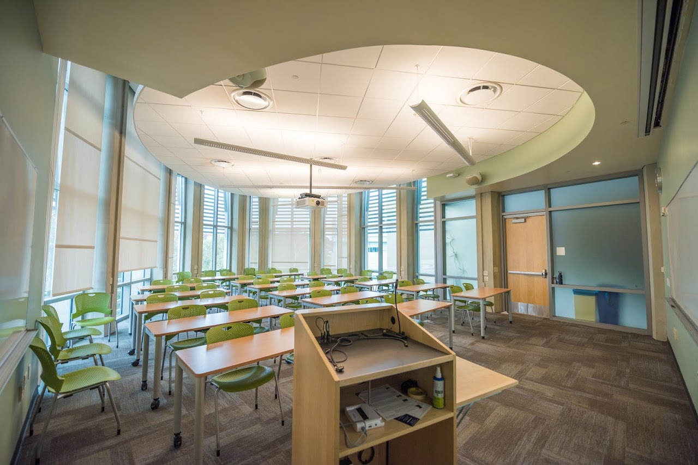

In PACE Cohorts you will...
- Connect with new friends
- Talk about big ideas in computing
- See what campus has to offer
- Learn to make the perfect Autograder ticket

What are Peer-led Academic Cohort Experiences?
First-year CSE freshman are organized into cohorts led by an experienced CSE tutor. Meet the team!
Cohorts meet weekly to talk about CSE courses and cutting-edge computing topics over free food.
PACE is free, open to all first-year CSE students, and runs for the entire year.
Register first to help us make groups ahead of time. Or, if you just show up in CSE 4140 on Monday at 11:30, Tuesday at 11, or Wednesday at 3:30 during the first 3 weeks of the quarter we'll help you get started!